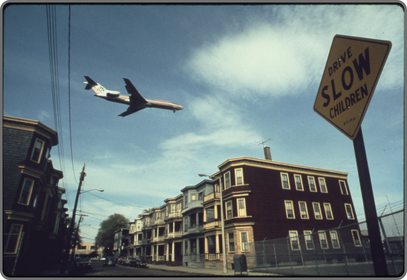
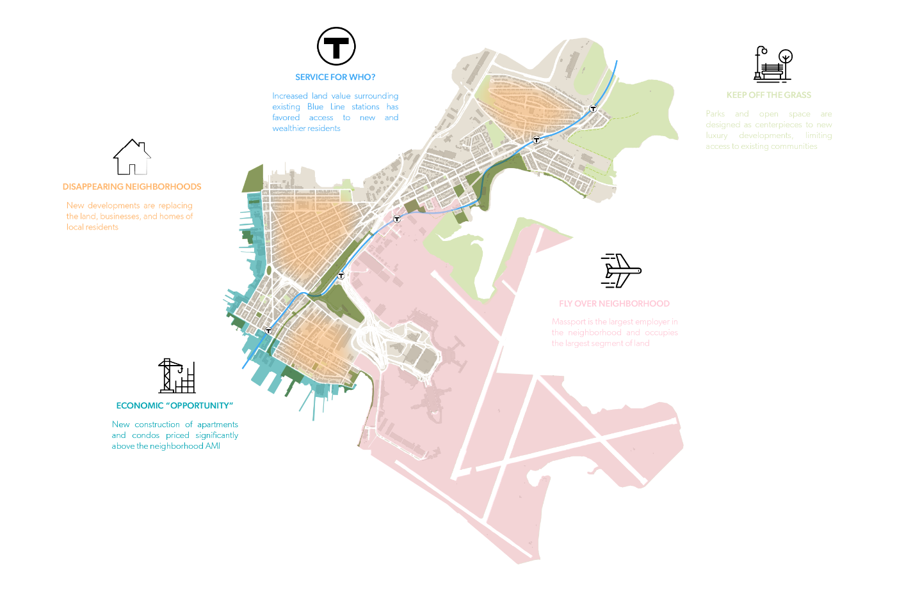
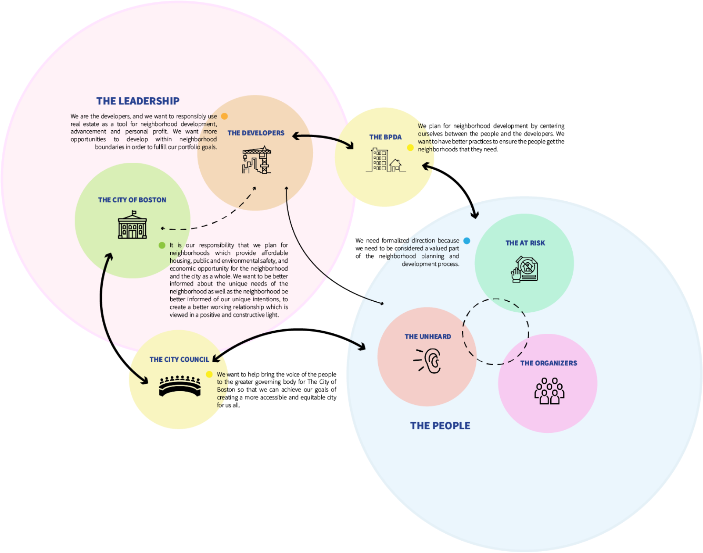
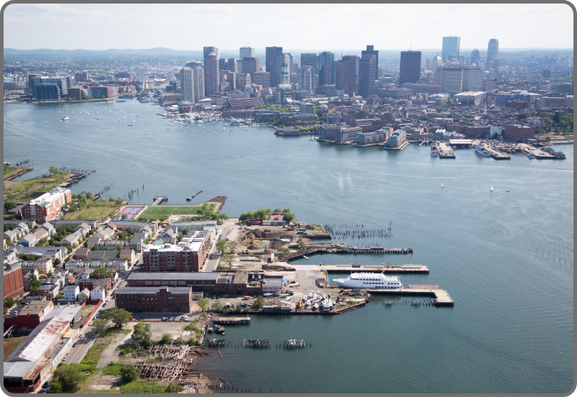
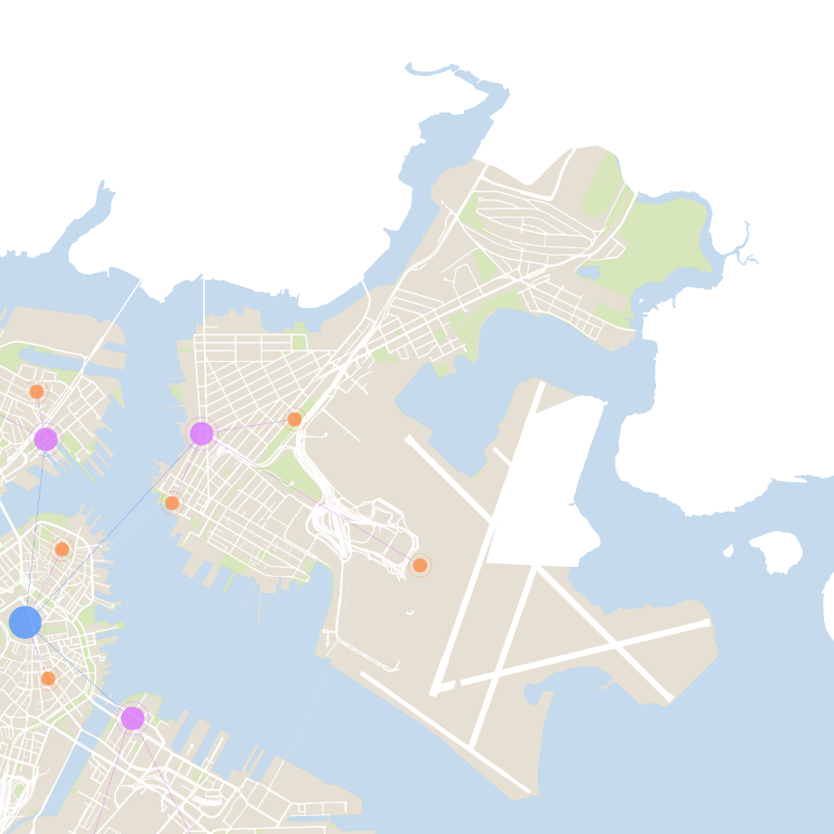
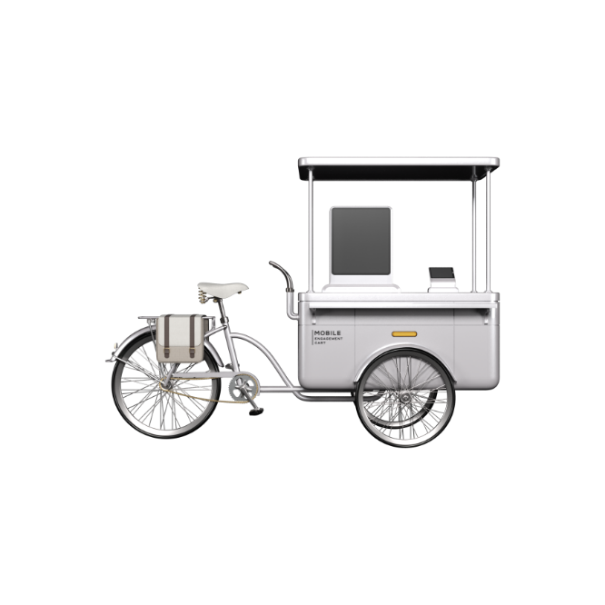
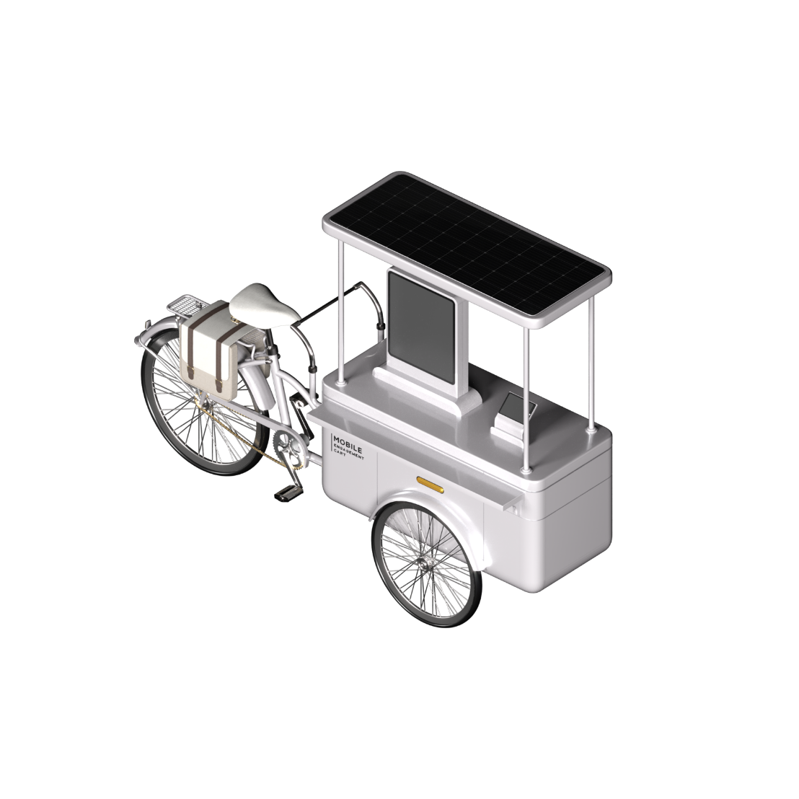

Community Engagement in East Boston
Bringing the Engagement to our Communities
A digital and physical plan to revolutionize our decades old, inequitable, and inaccessible community
engagement practices in East Boston

An airplane approaching Logan International Airport in 1973 - Michael Philip Manheim (EPA)
The Development of Eastie
With over 300 years of community, cultural, and neighborhood development, East Boston’s significance is
overlooked as it is known today simply as “the place with the airport”

Public and private developments have resulted in the rapid displacement of the unique communities who call
the neighborhood their home
Shrinking Pains

Traditional engagement practices often favor small groups of privledged individuals leaving prominent
communities feeling uncared for
Systematic Distrust
A neighborhood detached from the rest of the city, the people of East Boston often feel forgotten and
overlooked
An unchanged engagement process has led many in East Boston to believe the city is not interested in
their community
Recent residential and commercial developments have prioritized the needs of new and wealthier residents
Development
Detachment
Distrust

BPDA
A Detached Neighborhood
East Boston is naturally disconnected from the rest of the city with only a single connection via a
subaquatic road and subway resulting in a neighborhood which is detached socially, economically, and
emotionally
Digital community boards give the City of Boston a chance to directly connect each of our individual
communities with their neighborhoods and to the city
Community Display Board

1
Improving Access to Information
Timeline & Calendar
Always on and interactive displays placed in high foot traffic areas will allow for the display of
useful information like upcoming planning events, community events, and nearby project completion
timelines.
Project Info & Data
Virtual public displays can be used to showcase relevant community information and data, such as
neighborhood and citywide goals, officials and developer contact information, and local
advertisements.
With displays strategically placed within East Boston and throughout the rest of the city, residents,
businesses, and tourists are able to connect and communicate with one another like never before.
Community Communication
Features
Public Boat Launch
2 Miles Of New Walking Paths
Description
With Construction Slated For Summer 2021, The Updates To Our Waterfront Park Are Geared Towards
Creating A New Space For All Residence And Visitors To East Boston
Updated Waterfront Park
Details & Tell Us What You Think
Aprils’s events
Chat with a Planner
Speak with the BPDA about upcoming…
5:00 - 7:30
April 2021
SUN
MON
TUE
WED
THU
FRI
SAT
2
9
16
23
30
3
10
17
24
31
4
11
18
24
5
12
19
26
6
13
20
27
7
14
21
28
1
8
15
22
29
8
15
22
29
2
Reconnecting Our Neighborhood

A City Wide Connection
The community display board allows residents and businesses of East Boston to chat, learn, and connect
with the rest of the city digitally

Collapsable and battery powered design allowing for free range of view and low effort riding
Intergraded technology mobilizes the benefits of the permanent community board
In stationary form the cart becomes a noteworthy and interesting public attraction
Community Chat
3
Rebuilding Trust

People typically react positively to face-to-face conversations and mobile engagement cart has been
designed to reinforce interpersonal connection
Mobilizing Engagement
Personal Touch
More than just a cart, mobilizing community engagement allows for planners to travel through neighborhoods
speaking directly to their communities and become a trustworthy adversary
Proactively engaging East Boston to build a better East Boston
This plan and its design has been created through on the ground research (safely and virtually). Trust,
connection, and education must be restored in East Boston to retain the neighborhoods unique and crucial
communities